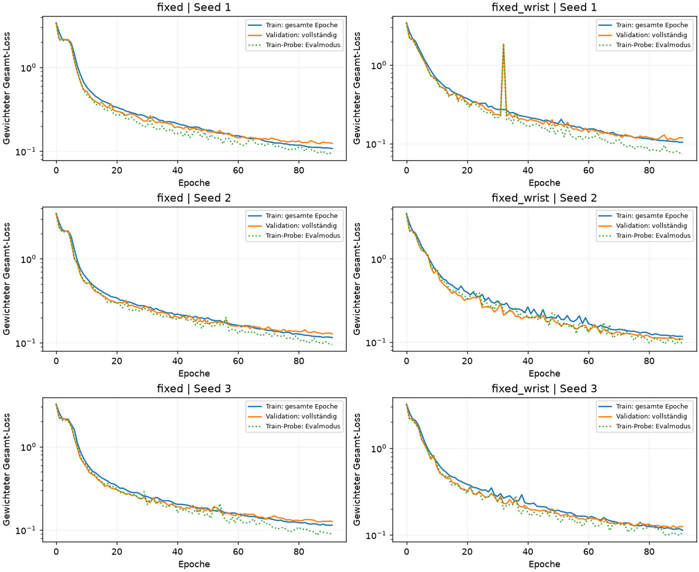
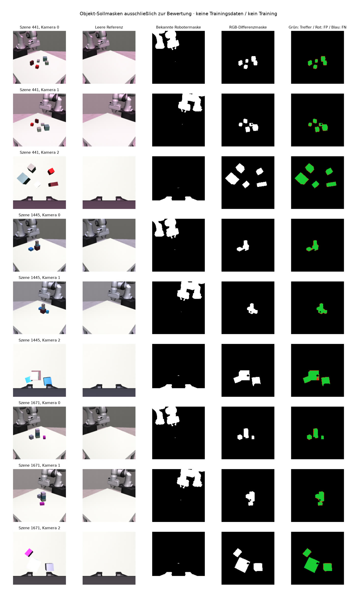
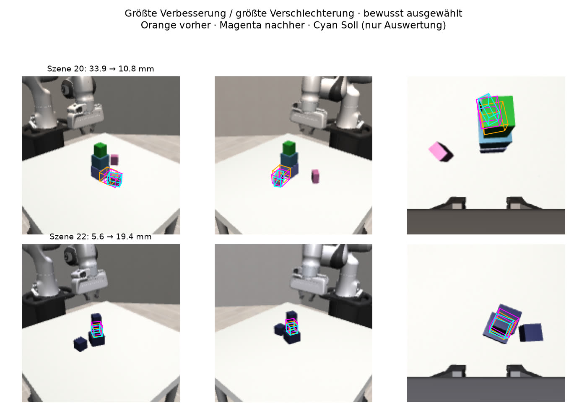

V
Perception track · work package 5
From camera images to cube positions
The main study gives the policy exact cube positions from the simulator. To leave the simulator, those positions have to come from cameras. In parallel to the policy work, I built a perception pipeline that estimates 3D boxes for up to five cuboids from two fixed cameras and a hand camera, checks how uncertain it is, and moves the arm for better views.
Replace the exact cube positions from the simulator with positions that the project's camera-based perception estimates from images, to see how much success depends on exact positions.Proposal · Work plan, step 5 (secondary)
13D box model (V2)904k parameters · 6 models · 91 epochs
2Seed disagreementuncertainty without retraining
3Reference masks6,000 empty-scene images
4Geometric refinementedges over multiple views
5Active hand cameracollision-checked whole arm
6Feed the policywork package 5, not yet run
How accurate is the model?
Corrected final test, mean of 3 seeds. Share of objects that are detected and placed within 10 mm. Hover for position error.
ReadOn scenes like the training data, the hand camera helps: 91.9% vs 88.5% within 10 mm. On unseen cuboid shapes, accuracy collapses to 26–35%. Wider coverage of shapes, light and occlusion has priority over simply training longer.
The original test images were black because of a rendering fault; the scenes were re-rendered and evaluated with the frozen checkpoints. The changed-shape panel varies shape and arrangement together.
Uncertainty signal
0.40–0.45
Spearman correlation between seed disagreement and position error. Holding back the most uncertain groups removes 39–53% of wrong predictions.
Edge refinement (VIS-001)
2.09 → 1.59
mm-equivalent scene error in one family; 5.08 → 4.01 in another, one unchanged, one without a side route.
Active camera pilot
7 / 0
7 uncertain cases triggered a new hand-camera view, 0 updates accepted: the extra images made raw estimates worse (14.9 → 37.8 mm). No collisions in 1,119 motion samples.
Watch the perception pipeline



For the proposalThe perception pipeline works under simulation conditions similar to its training data, but it is not yet good enough for unseen shapes, and extra views do not help yet. That is why the main comparison uses exact positions, and camera-based positions remain a secondary transfer check.